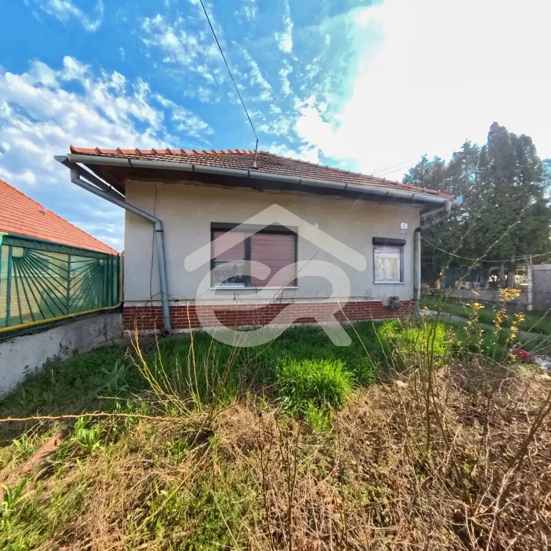
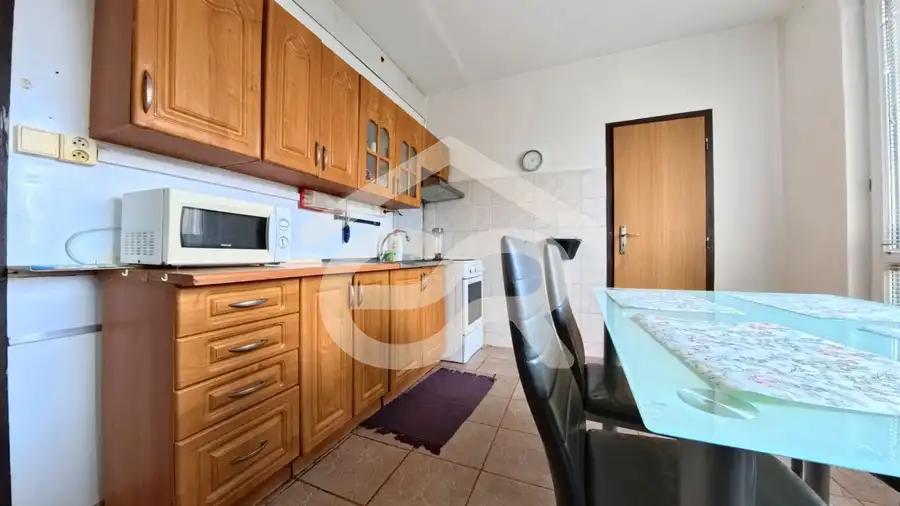
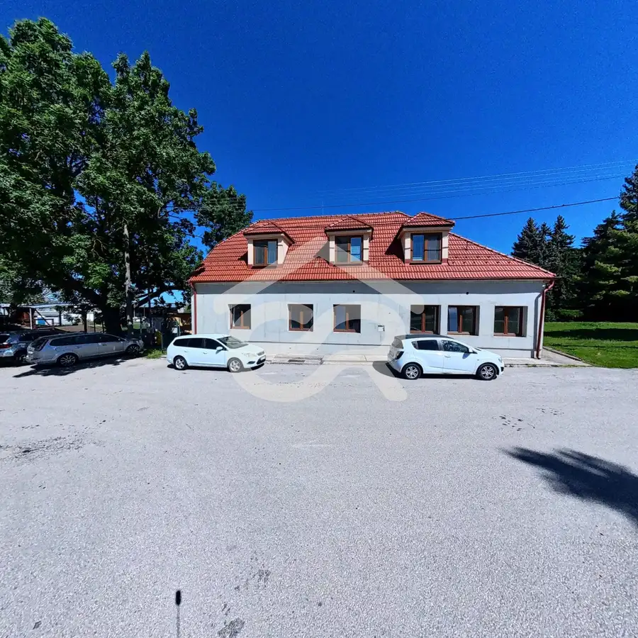

Na prenájom exkluzívny mezonet 153m2 v Nitre s garážovým parkovaním
Nitra
- Dispozícia3-izbový
- Plocha153 m²
- Poschodie0. z 2
- Stavúplne prerobený
- Vlastníctvoosobné
O nehnuteľnosti
NA PRENÁJOM nadštandardný, kompletne zariadený 3-izbový mezonet s rozlohou 153 m² na Južnej ulici v Nitre je navrhnutý pre náročného klienta alebo rodinu, ktorá odmieta kompromisy a hľadá dokonalú súhru dizajnu, priestoru a technológií.
? Luxus, štýl a prémiové technológie
Byt sa prenajíma kompletne vybavený dizajnovým nábytkom na mieru a špičkovými spotrebičmi. Každý detail tu bol premyslený tak, aby vám uľahčil a spríjemnil život.
?️ Spoločenská zóna (Prízemie)
Srdce domova: Otvorený koncept prémiovej, plne vybavenej kuchyne spojenej s presvetlenou obývacou miestnosťou a výstupom na lodžiu, ktorá je ideálna na rannú kávu.
Top spotrebiče: Kuchyňa disponuje zabudovanou umývačkou riadu, mikrovlnnou rúrou, chladničkou s mrazničkou a výkonným digestorom.
Smart & Safe prvky: Maximálne pohodlie zabezpečujú elektrické závesy v obývačke a zabudovaná klimatizácia. O vaše cennosti sa postará diskrétny trezor priamo v obývacej časti.
Pre hostí je na tomto podlaží k dispozícii samostatná toaleta.
? Odpočinková zóna (Poschodie)
Veľkorysá spálňa: Dominuje jej luxusná veľká posteľ a priestranná vstavaná skriňa. Inteligentným architektonickým riešením (štýlovou stenou) je od spálne oddelený plnohodnotný pracovný kút pre váš nerušený home office.
Dizajnová kúpeľňa: Moderná kúpeľňa s preskleným sprchovacím kútom. Druhé samostatné WC sa nachádza taktiež na poschodí.
Multifunkčná druhá izba: Ponúka množstvo miesta a je kompletne zariadená posteľou, skriňou a pracovným stolom. Poslúži ako dokonalá detská izba alebo druhá pracovňa.
?️ Praktické benefity a technické vybavenie
Ekonomika pod kontrolou: Vlastné kúrenie zabezpečené plynovým kotlom (kúrite len vtedy, kedy potrebujete).
Čistota a komfort: Samostatná práčka a sušička sú samozrejmosťou.
Konektivita: V byte je zavedený vysokorýchlostný internet a TV od Nett + Orange.
Parkovanie: K mezonetu prislúcha vlastné parkovacie miesto, takže parkovanie po náročnom dni máte vyriešené.
? TOP Lokalita: Južná ulica, Nitra
Bývanie na Južnej ulici kombinuje pokojnú rezidenčnú atmosféru s perfektnou mestskou dostupnosťou.
Všetko poruke: V pešej dostupnosti nájdete kompletnú občiansku vybavenosť – potraviny, reštaurácie, kaviarne, školy a škôlky pre rodiny s deťmi.
Skvelá dostupnosť: Do centra Nitry sa dostanete autom za pár minút, k dispozícii je vynikajúce napojenie na mestskú hromadnú dopravu a rýchly výjazd na obchvat mesta/diaľnicu R1.
Zelené okolie: Lokalita ponúka dostatok možností na prechádzky, šport a relax po práci.
Cena prenájmu: 1200€ / mesiac + 1200€ depozit + sprostredkovateľský poplatok vo výške nájmu
Dostupnosť: Ihneď
Ak hľadáte bývanie, ktoré reprezentuje váš životný štýl a poskytne vašej rodine maximálne bezpečie a komfort, tento mezonet čaká práve na vás.
Dohodnite si obhliadku ešte dnes:
?
✉️
Parametre
| Zastavaná plocha | 153 m² |
|---|---|
| Celková rozloha | 153 m² |
| Úžitková plocha | 153 m² |
| Poschodie | prízemie |
| Počet poschodí | 2 |
| Počet izieb | 3 |
| Vlastníctvo | osobné |
| Stav | úplne prerobený |
| Odvoz odpadu | áno |
| Voda | verejný vodovod |
| El. napätie | 230V |
| Plyn | nie |
| Kanalizácia | áno |
| Internet | wifi |
| Kúpeľňa | sprchovací kút |
| Vykurovanie | vlastné |
| Lódžia | áno |
| Pivnica | nie |
| Parkovanie | vlastné vyhradené |
| Inžinierske siete | áno |
| Postavené z | tehla |
| Zariadenie | zariadený |
| Zateplený objekt | áno |
| Strecha | po rekonštrukcii |
| Káblová televízia | áno |
| Energetický certifikát | nie |
| Okná | plastové |
| Terén | rovina |
| Prístupová cesta | asfaltová cesta |
| Novostavba | áno |
| Dátum zverejnenia | 14. 7. 2026 |
Kde to je
Mohlo by Vás zaujímať

Rodinné domy10 105 000 €NA PREDAJ 5 izbový rodinný dom s pozemkom 1056m2 v meste Vráble. Vráble 5-izbový160 m² Na predaj 5-izbový rodinný dom s veľkým pozemkom v meste Vráble !! Hľadáte nehnuteľnosť, ktorú si dokážete pretvoriť podľa vlastných predstáv?…
Byt10 164 000 €Na predaj 2 izbový byt v Nitre na Klokočine Nitra 3-izbový68 m²2. podlažie Slnečný 2-izbový byt (68 m²) v žiadanej lokalite Klokočiny Hľadáte bývanie, ktoré spája pokojnú atmosféru s výbornou dostupnosťou? Ponúkame na…
Hotely a penzióny10 460 000 €Na predaj penzión v Tajnej s parkovaním Tajná 12-izbový355 m² INVESTIČNÁ PRÍLEŽITOSŤ: Penzión s 8 bytovými jednotkami v obci Tajná (pri Vrábľoch) – ideálne firemné ubytovanie Ponúkame na predaj nehnuteľnosť s…